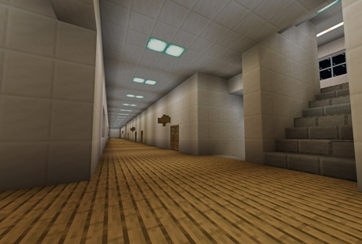
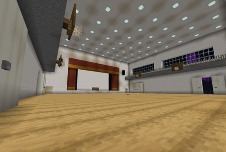
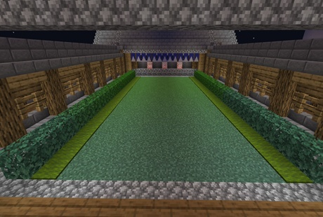
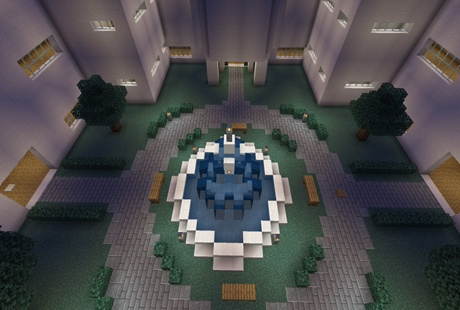

マップ「人狼学園」についての解説
「人狼学園」は桜が咲き誇る春の学園を舞台とした広大なマップで大人数でのプレイにおすすめです。
このマップは外と学園内の二つに分かれており、外は高低差がほとんどなく障害物もないため短期戦が好きな人におすすめです。
学園内は死角が多く一部の部屋に入れるようになっています。
こちらは人狼学園の参考写真です。




「人狼学園」は桜が咲き誇る春の学園を舞台とした広大なマップで大人数でのプレイにおすすめです。
このマップは外と学園内の二つに分かれており、外は高低差がほとんどなく障害物もないため短期戦が好きな人におすすめです。
学園内は死角が多く一部の部屋に入れるようになっています。
こちらは人狼学園の参考写真です。



